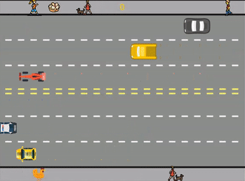
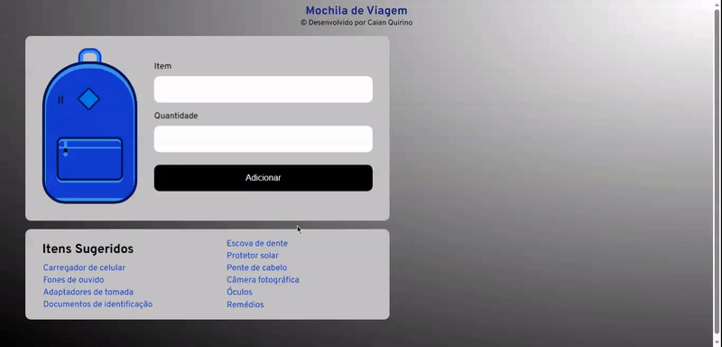
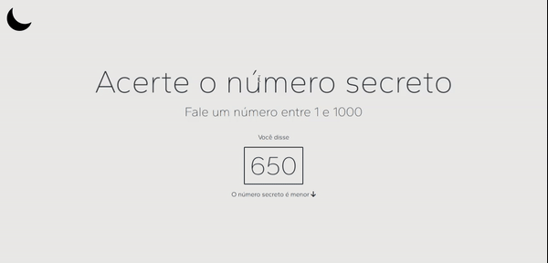
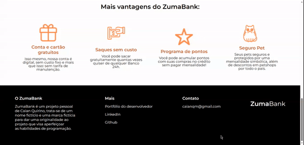
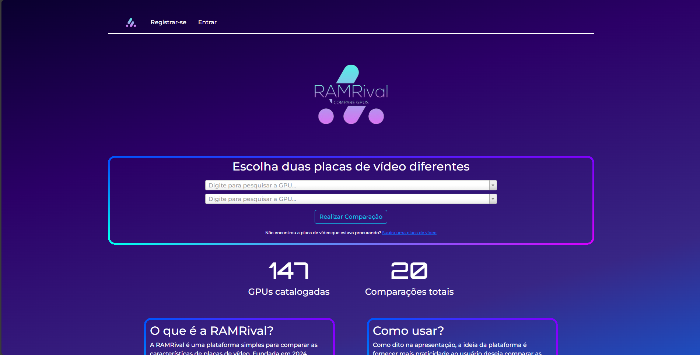

Projeto 1: Pong

Meu primeiro projeto ainda no curso de lógica de programação, foi o jogo Pong originalmente desenvolvido para o Atari no começo da década de 1970, nesse projeto aprendi a fazer esse mesmo jogo em Scratch para entender como o computador entende os códigos que damos a ele. E depois o jogo foi criado em JavaScript usando como base o projeto criado anteriormente no Scratch. Por ser o primeiro projeto, não consegui criar muitas coisas diferentes do que o jogo Pong tem a oferecer. Esse projeto possui duas versões (além da versão em Scratch), uma versão para um jogador e outra para dois jogadores.
Pong Singleplayer: Clique aqui
Pong Multiplayer: Clique aqui
Projeto 2: Freeway

Esse projeto, baseado no jogo Freeway original do Atari e lançado no começo da década de 1980, ainda trabalha bastante com a lógica de programação, porém dessa vez não utilizamos o Scratch como base para desenvolvê-lo, e sim o projeto anterior. O código do Pong, foi utilizado como base para o desenvolvimento desse projeto e já com um pouco mais de prática e conhecimento decidi dar uma identidade maior ao jogo e deixar ele diferente do jogo que foi ensinado na aula, adicionei pedestres que saem e voltam à tela e diferentes estilos de carros na tela.
Freeway: Clique aqui
Projeto 3: Zuma

Uma interface de uma plataforma de streaming de filme foi o meu terceiro projeto, esse projeto colocou em prática minhas habilidades com HTML e CSS novamente e me fez entender o quão otimizado pode ser um site nessas linguagens. Além disso, esse projeto me fez desenvolver algumas habilidades em Photoshop, pois utilizei de montagens para fazer as imagens que estão sendo exibidas nesse site. Vale lembrar que o Zuma é uma plataforma de streaming fictícia, criadas apenas para minha prática em programação.
Zuma: Clique aqui
Projeto 4: ZumaBooks

Corpo principal de uma plataforma de compra de livros e e-books, o meu quarto projeto foi feito em mobile-first, ou seja, foi totalmente criado para dispositivos móveis e depois fui deixando ele responsivo para os demais dispositivos (Tablet e Desktop), nesse projeto eu utilizei HTML, CSS e SwiperJS para criar um carrossel com as capas dos livros em destaque que ficam girando automaticamente e em looping. Vale lembrar, que assim como o projeto anterior, o ZumaBooks é uma plataforma fictícia com logos, imagens criadas e montadas com imagens encontradas gratuitamente nas ferramentas de pesquisa internet à fora e nos materiais do curso da Alura.
ZumaBooks 2.0: Projeto atualizado em 06/07/2023, confira o que há de novo no repositório
ZumaBooks: Clique aqui
Projeto 5: CRUD

Como primeiro projeto em JavaScript, desenvolvi um CRUD que simula uma mochila de viagem, nele é possível escrever o item que vai levar a uma viagem, a quantidade desse item e adicionar na mochila. Tudo que é adicionado na mochila, pode ser modificado (basta escrever o nome do item do mesmo jeito que foi adicionado na mochila e alterar a quantidade) e removido. Tudo fica salvo no armazenamento local do seu navegador, portanto se acidentalmente ou propositalmente o site for fechado tudo ficará salvo. E para completar o projeto, me desafiei a criar uma lista com itens sugeridos para você clicar e o item já ser inserido na barra de escrever itens, basta você selecionar o item da lista, escrever a quantidade e adicionar à mochila.
Mochila de viagem: Clique aqui
Projeto 6: O Número Secreto

Jogo com reconhecimento de voz em JavaScript, desenvolvi um minijogo que utilizando Math.random( ) aleatoriza um número de 1 a 1000 e você tem como objetivo dentro do jogo acertar o número que foi aleatorizado utilizando sua voz, o site só precisa ter acesso ao seu microfone para o WebSpeechAPI identificar qual número está sendo dito. Utilizando JavaScipt também criei uma função para deixar o site em Modo escuro e modo claro e utilizei cores agradáveis aos olhos e fontes elegantes para deixar o site mais bonito.
O Número Secreto: Clique aqui
Projeto 7: ZumaBank

Após muitos estudos em JavaScript, trabalhei nesse projeto que se trata de uma página WEB para um Internet Banking. O projeto conta com uma página principal para estilizar o banco e demonstrar suas cores, e clicando no botão de abertura conta é possivel entrar num formulário inteiramente feito em JavaScript para coletar informações e armazená-las para em teoria criar sua conta bancária. O site também conta com um sistema (também em JavaScript) de reconhecimento facial, basta seguir as instruções para iniciar a câmera e autorizar o seu navegador a utilizar a câmera para capturar sua foto.
ZumaBank: Clique aqui
Projeto 8: RamRival

Meu primeiro grande projeto completo, que envolve Front-end em HTML/CSS/JS e Back-end com Python/Flask, banco de dados MySQL e APIs que garantem criação de contas em e-mails existentes e válidos com confirmações de conta no e-mail e redefinição de senha também pelo e-mail. O projeto se trata de uma plataforma para comparar as principais placas de vídeo do mercado. Esse projeto foi um grande desafio para mim, mas também o projeto que me passou mais aprendizado com prática, pretendo continuar atualizando essa plataforma e estarei publicando as atualizações no site e no meu LinkedIn.
RamRival: Clique aqui